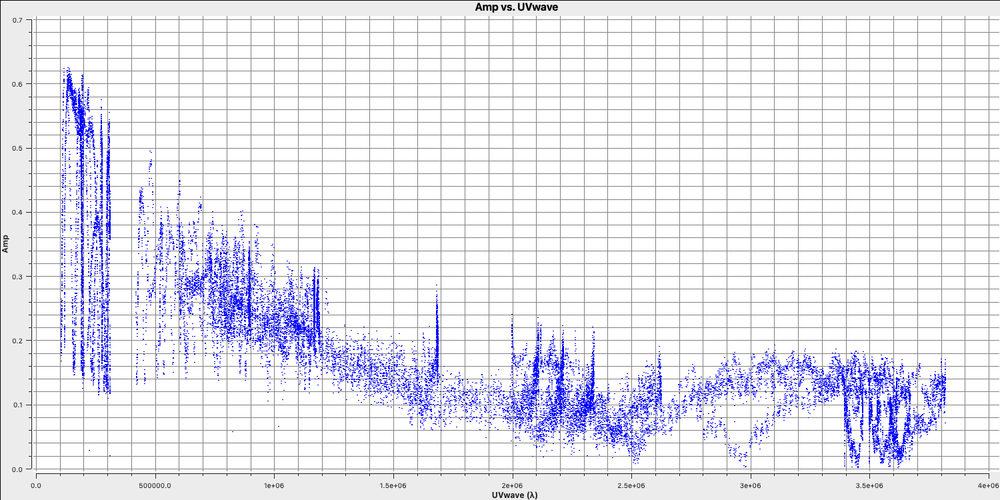
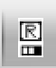

3C277.1 full tutorial
This guide provides a basic example for calibrating e-MERLIN C-Band (5 GHz) continuum data in CASA. It has been tested in CASA 6.5. It is designed to run using an averaged data set all_avg.ms (1.7 G), in which case you will need at least 5.5 G disk space to complete this tutorial. This tutorial is based upon the DARA 3C277.1 tutorial but is using new 2019 observations of the sources and some updates for ERIS 2024. If you find bugs in the code please contact Jack Radcliffe (jack.radcliffe@up.ac.za).
If you have a very slow laptop, you are advised to skip some of the plotms steps (see the plots linked to this page instead) and especially, do not use the plotms options to write out a png. This is not used in this web page, but if you run the script as provided, you are advised to comment out the calls to plotmsor at least the part which writes a png, see tutors for guidance.
Table of Contents
Important: The numbers in brackets respond to the steps in the accompanying python scripts.
Part 1 - Introduction to interferometric data
Part 2 - Calibration
- Setting the flux of the primary flux scale calibrator (11)
- Bandpass calibration
- Decorrelation and solution intervals (12)
- Pre-bandpass calibration (13)
- Derive bandpass solutions (14)
- Time-dependent delay calibration (15)
- Gain calibration (17)
- Time-dependent phase calibration of all calibration sources
- Time-dependent amplitude calibration of all calibration sources
- Determining true flux densities of other calibration sources (18-19)
- Apply solutions to target (20-21)
Part 3 - Imaging
- Imaging 101
- Determining imaging parameters (1-2)
- First image of 3C277.1 (2)
- Measuring image properties (3)
Part 4 - Self calibration
- Inspect to choose interval for initial phase self-calibration (4-5)
- Derive phase self-calibration solutions (step 6)
- Apply first phase solutions and image again (7)
- Phase-self-calibrate again (8)
- Apply the solutions and re-image (9)
- Choose solution interval for amplitude self-calibration (10)
- Amplitude self-cal (11)
- Apply amplitude and phase solutions and image again (12)
- Summary
Part 5 - Advanced imaging
Part 1 - Introduction to interferometric data
1. Guidance for calibrating 3C277.1 in CASA
1A. The data and supporting material
For this workshop, we need the following files. Please double check that you have the following in your current directory:
all_avg.ms- the data (after conversion to a measurement set).3C286_C.clean.model.tt0- used for fluxscaling of the data set.all_avg_all.flags.txt- all flags3C277.1_cal_outline2024.py- the script that we shall input values into to calibrate these data.3C277.1_cal_all2024.py.tar.gz- cheat script for calibating these data.3C277.1_imaging_outline2024.py- the script that we shall input values into to image and self-calibrate the data.3C277.1_imaging_all2024.py.tar.gz- cheat script for imaging and calibrating these data.1252+5634.ms.tar.gz- measurement set if the calibration goes wrong
.tar.gz or .tar) so you need to use tar -xzvf <filename> to untar these.
1B. How to use this guide
This user guide presents inputs for CASA tasks e.g., gaincal to be entered interactively at a terminal prompt for the calibration of the averaged data and initial target imaging. This is useful to examine your options and see how to check for syntax errors. You can run the task directly by typing gaincal at the prompt; if you want to change parameters and run again, if the task has written a calibration table, delete it (make sure you get the right one) before re-running. You can review these by typing:
# In CASA
!more gaincal.lastThis will output something like:
vis = 'all_avg.ms'
caltable = 'bpcals_precal.ap1'
field = '1407+284'
...
#gaincal( vis='all_avg.ms',caltable='bpcals_precal.ap1',field='1407+284',spw='',intent='',selectdata=True,solint='120s',combine='',
preavg=-1.0,refant='Mk2',refantmode='flex',minblperant=2,minsnr=2,solnorm=True,gaintype='G',smodel=[],calmode='ap',solmode='',rmsthresh=[],
corrdepflags=False,append=True,docallib=False,parang=False,timerange='',uvrange='',antenna='',scan='',observation='',msselect='',normtype='mean',
splinetime=3600.0,npointaver=3,phasewrap=180.0,callib='',gaintable=['all_avg.K', 'bpcals_precal.p1'],gainfield=[''],interp=[],spwmap=[] )
As you can see in the script, the second format (without the #) is the form to use in the script, with a comma after every parameter value. When you are happy with the values which you have set for each parameter, enter them in the script 3C277.1_cal_outline2024.py (or whatever you have called it). You can leave out parameters for which you have not set values; the defaults will work for these (see e.g., help(gaincal) for what these are), but feel free to experiment if time allows.
The script already contains most plotting inputs in order to save time. Make and inspect the plots; change the inputs if you want, zoom in etc. There are links to copies of the plots (or parts of plots) but only click on them once you have tried yourself or if you are stuck.
The parameters which should be set explicitly or which need explanation are given below, with '**' if they need values. Steps that you need to take action on are in bullet points.
The data set that we are using today is a 2019 observation of 3C277.1, a bright radio AGN with two-sided jets. Within the data data set, named all_avg.ms it contains four fields that we are going to use to calibrate these data.:
| e-MERLIN name | Common name | Role |
|---|---|---|
| 1252+5634 | 3C277.1 | target |
| 1302+5748 | J1302+5748 | phase reference source |
| 0319+415 | 3C84 | bandpass, polarisation leakage cal. (usually 10-20 Jy at 5-6 GHz) |
| 1331+3030 | 3C286 | flux, polarisation angle cal. (flux density known accurately, see Step XX) |
These data have already been preprocessing from the original raw fits-idi files from the correlator which included the following steps.
- Conversion from fitsidi to a CASA compatible measurement set.
- Sorted and recalculated the $uvw$ (visibility coordinates), concatenate all data and adjust scan numbers to increment with each source change.
- Averaged every 8 channels and 4s.
2. Data inspection and flagging
2A. Check data: listobs and plotants (steps 1-3)
In this part, we shall see how we can get the information from our data set. One of the golden rules of data reduction is to know your data, as different arrays, configurations and frequencies require different calibration strategies.
- Firstly, check that you have
all_avg.msin a directory with enough space and start CASA. - Enter the parameter in step 1 of the script to specify the measurement set. The task
listobswill summarise the information given above and write it to a file namedall_avg.listobs.txt.
listobs(vis='**',
overwrite=True,
listfile='all_avg.listobs.txt')
Important: To make it easier, the line numbers corresponding to the script 3C277.1_cal_outline2024.py are included in the excerpts from the script shown in this tutorial.
- When you have entered the parameter, we want to execute the step so that we run the task. In CASA you want to enter the following:
runsteps=[1]; execfile('3C277.1_cal_outline2024.py') - Check the CASA logger to ensure there are no errors (look for the word SEVERE) and check your current directory for a new file called
all_avg.listobs.txt. - Open this file using your favourite text editor (e.g., gedit, emacs, vim) and inspect it.
Selected entries from this listobs file, ordered by time, show the various scans during the observation,
Date Timerange (UTC) Scan FldId FieldName nRows SpwIds Average Interval(s) ScanIntent
01-Aug-2019/23:20:10.5 - 00:00:00.2 1 3 0319+4130 35820 [0,1,2,3] [4, 4, 4, 4]
02-Aug-2019/00:00:04.0 - 00:00:07.0 2 2 1302+5748 60 [0,1,2,3] [3, 3, 3, 3]
00:04:54.5 - 00:06:01.0 3 1 1252+5634 848 [0,1,2,3] [4.14, 4.14, 4.14, 4.14]
00:06:04.0 - 00:07:59.5 4 2 1302+5748 1484 [0,1,2,3] [3.96, 3.96, 3.96, 3.96]
...
09:30:03.0 - 10:00:00.2 183 3 0319+4130 12428 [0,1,2,3] [4, 4, 4, 4]
10:00:03.0 - 10:30:00.2 184 0 1331+3030 16980 [0,1,2,3] [4, 4, 4, 4]
10:30:03.0 - 10:32:00.3 185 2 1302+5748 364 [0,1,2,3] [4, 4, 4, 4]
10:32:03.0 - 10:36:01.0 186 1 1252+5634 3220 [0,1,2,3] [4.02, 4.02, 4.02, 4.02]
10:36:03.0 - 10:38:00.3 187 2 1302+5748 1436 [0,1,2,3] [4, 4, 4, 4]
...There are 4 fields:
Fields: 4
ID Code Name RA Decl Epoch nRows
0 ACAL 1331+3030 13:31:08.287300 +30.30.32.95900 J2000 46256
1 1252+5634 12:52:26.285900 +56.34.19.48800 J2000 560340
2 1302+5748 13:02:52.465277 +57.48.37.60932 J2000 242296
3 CAL 0319+4130 03:19:48.160110 +41.30.42.10330 J2000 91856Four spectral windows (each with 64 channels) with all four polarisation products:
Spectral Windows: (4 unique spectral windows and 1 unique polarization setups)
SpwID Name #Chans Frame Ch0(MHz) ChanWid(kHz) TotBW(kHz) CtrFreq(MHz) Corrs
0 none 64 GEO 4817.000 2000.000 128000.0 4880.0000 RR RL LR LL
1 none 64 GEO 4945.000 2000.000 128000.0 5008.0000 RR RL LR LL
2 none 64 GEO 5073.000 2000.000 128000.0 5136.0000 RR RL LR LL
3 none 64 GEO 5201.000 2000.000 128000.0 5264.0000 RR RL LR LLAnd 6 antennas participating:
Antennas: 6:
ID Name Station Diam. Long. Lat. Offset from array center (m) ITRF Geocentric coordinates (m)
East North Elevation x y z
0 Mk2 Mk2 24.0 m -002.18.14.1 +53.02.57.3 19618.7284 20856.7583 6908.7107 3822846.760000 -153802.280000 5086285.900000
1 Kn Kn 25.0 m -002.59.49.7 +52.36.17.2 -26823.2185 -28465.4973 7055.9694 3860084.921000 -202105.036000 5056568.917000
2 De De 25.0 m -002.08.40.0 +51.54.49.9 30300.7876 -105129.6730 7263.6278 3923442.718000 -146914.386000 5009755.292000
3 Pi Pi 25.0 m -002.26.43.3 +53.06.14.9 10141.4322 26944.5297 6845.6479 3817549.874000 -163031.121000 5089896.642000
4 Da Da 25.0 m -002.32.08.4 +52.58.17.2 4093.0417 12222.9915 6904.6753 3829087.869000 -169568.939000 5081082.350000
5 Cm Cm 32.0 m +000.02.13.7 +51.58.49.3 176453.7144 -97751.3908 7233.2945 3920356.264000 2541.973000 5014284.480000In the next step, we are going to plot the positions of the antennae present in our observation. This is a handy way of getting a feel on the expected resolution and will assist when we try to determine a reference antenna.
- Take a look at step 2 and enter one parameter to plot the antenna positions (optionally, a second to write this to a png).
plotants(vis='**', figfile='**') - Execute step 2 by setting
runstepsand usingexecfilelike in step 1.
You should end up with a plot that looks similar to that below.

Consider what would make a good reference antenna. Although Cambridge has the largest diameter, it has no short baselines. We will use Mk2 for the reference antenna. Ideally we want the reference antenna to look through similar atmospheric conditions so we typically choose the one with the shortest baselines, or we pick the most sensitive antenna.
Next we want to plot the $uv$ coverage of the data for the phase-reference source so that we can see what Fourier scales our interferometer is sampling and whether we need to adopt our calibration strategy to adapt for snapshot imaging.
- Check out step 3 in the script. You need to enter several parameters but some have been done for you. Check out the annotated
listobsoutput above to try to identify these but remember to also use thehelpfunction,plotms(vis='**', xaxis='**', yaxis='**', coloraxis='spw', avgchannel='8', field='1302+5748', plotfile='', showgui=gui, overwrite=True) - Execute step 3 and check the new
plotmsgraphical user interface (GUI) that should have appeared on your screen.
Note that we averaged in channels a bit so that this doesn't destroy your computer. If this takes a long time, move on and look at the plot below. The $u$ and $v$ coordinates represent (wavelength/projected baseline) as the Earth rotates whilst the source is observed. Thus, as each spw is at a different wavelength, it samples a different part of the $uv$ plane, improving the aperture coverage of the source, allowing Multi-Frequency Synthesis (MFS) of continuum sources.

With our initial data inspection under way, we are now going to move onto finding and removing bad data that can adversely affect our calibration later down the line.
2B. Identify 'late on source' bad data (step 4)
The first check for bad data that we are going to look for is whether the antennae are on-source for the whole duration of the scan. This is important to check, especially for heterogeneous arrays, where the different slewing rates means that different antennae come onto source at different times. Often this is flagged automatically by the observatory but it is not always the case. The flagging of these data is called 'quacking' (don't ask me why!). Let's first plot the data to see if we need to quack the data!
- Check out step 4 and use
plotmsto plot the phase-reference source amplitudes as a function of time. To save time we want to select just a few central channels and average them. This needs to be enough to give good S/N but not so many that phase errors across the band cause decorrelation. Some hints on the proper parameter selection are given in the code block below.
plotms(vis='**',
field='**', #phase reference source
spw='**', #plot just inner 1/2 channels for each spw (check listobs for the # channels)
avgchannel='**', #average these channels together
xaxis='**',yaxis='**', #plot amp versus time
antenna=antref+'&Pi', #uses Mk2 as a reference antenna for comparison but other w/ short baselines are ok
correlation='**,**', #just select the parallel polarisations as polarised intensity is fainted
coloraxis='corr', #colour by correlation
showgui=gui,
overwrite=True, plotfile='')
- Once you have inputted the parameters, execute step 4 and the plotms GUI should have opened
- Zoom in onto just a few scans and you should see a plot similar to that shown below.
In this case, the pre-applied observatory flags which removed data when the antennae was off source was not perfect, resulting in the single integration at the start which needs to be flagged. This is roughly the same amount of time at the start of each scan is bad for all sources and antennas, so the phase reference is a good source to examine. (In a few cases there is extra bad data, ignore that for now).
- Estimate this time interval using the plot and we shall then enter that value in next part.
2C. Flag the bad data at the start of each scan (step 5)
One of the most important rules for good data reduction is good bookkeeping i.e., knowing exactly what has been done to these data, and how to return back to how the data looked in a previous step. Often you may find that you have entered an incorrect parameter and this has messed up your data, such as accidentally flagging all your data. CASA has some inbuilt methods to help with this bookkeeping. One of these is the task flagmanager which can be used to remember all the flags at a certain point in the calibration steps. This means that you can use this task to revert back to how the flags were before you changed them.
- Take a look at step 5, we are going to input parameters for both tasks before executing the step this time.
- The
flagmanagertask will be used to save the current state of the flags before we remove that bad data we identified at the start of the scans. Enter the parameters that will save the flags.flagmanager(vis='**', mode='**', versionname='pre_quack')
If the parameters are set correctly, then we will generate a backup named pre_quack in a all_avg.ms.flagversions file. After we execute step 5, you can check that it exists by running flagmanager again using mode='list' instead.
Next, we need to actually do the quacking or flagging of these channels. We use the CASA task flagdata to do this along with the special mode called quack.
- Fill in the
flagdataparameters, inserting the time that the antennas were off source that we found earlier.flagdata(vis='**', mode='**', quackinterval='**') #needs to be a integer - Execute step 5. The script will also re-run the
plotmscommand from step 4 to show that the data is removed (if your GUI is still open we could tick the reload option and replot it.
This step should produce a plot similar to that below (when you zoom in) which shows the bad data removed.

2D. Flag the bad end channels (steps 6-7)
Due to the receiver engineering and filters on the receivers, the edges of each spw in the frequency domain are of lower sensitivity and are normally be flagged. We often correct for this effect (called bandpass calibration), but the low S/N data on these edge channels can result in errant solutions and noise being injected into these data. This effect is instrumental and so is the same for all sources, polarizations and antennas. However, different spectral windows may be different. We need to look at a very bright source which has enough signal in each channel in order to see this effect. In this case we can use the source 0319+415.
To obtain the correct parameters for the flagging part, we want to identify the channels where the amplitudes versus frequencies are low so we want to plot these data.
- Look at step 6. For the
plotmscommand below. Add in the correct parameters to plot the frequency versus time for 0319+415.plotms(vis='**', field='**', xaxis='**',yaxis='**', #plot amplitude against channel antenna=antref+'&Kn', #select one baseline correlation='**,**', #just parallel hands avgtime='**', #set to a very large number avgscan='**', #average all scans iteraxis='**', coloraxis='**', #view each spectral window in turn, and colour showgui=gui, overwrite=True, plotfile='')
The use of iteraxis allows us to scroll between the spectral windows (using the green arrow buttons in the GUI). Below is the plot for the first spectral window.
From looking at this plot we are going to flag the channels dropping off to zero at the edge. These are going to be approximately the first 5 channels (0-4) and the last three channels (61-63).
- Do the same for the other three spectral windows and note down which channels to flag (remember that we are using zero indexing so the first channel is 0).
With the channels for all spectral windows identified, we want to now actually flag them. However, remember that we should always back-up our flags should things go wrong.
- Look at step 7. Back up the flags and enter the appropriate parameters in
flagdata. Note the odd CASA notation for selecting spectral windows and channels. We have provided the "bad"/insensitive channels in spw 0 with the correct syntax, so use that as a guide for the other spectral windows. You can add multiple spectral windows in the same string using a comma e.g.,spw='0:0~3,1:0~4', will flag channels 0 to 3 in spectral window 0 and 0 to 4 in spectral window 1.flagmanager(vis='all_avg.ms', mode='save', versionname='pre_endchans') # End chans flagdata(vis='all_avg.ms', mode='manual', spw='0:0~4;61~63,***', #enter the ranges to be flagged for the other spw flagbackup=False)
- Execute step 7 and then re-plot in
plotms(the code should already do this replotting for you!). You should get a plot similar to that below
2E. Identify and flag remaining bad data (steps 8-10)
The final step in the flagging process is to closely inspect your data and look for other bad data. This can take many forms such as correlator issues (which causes low amplitudes on some baselines), antenna problems such as warm loads and Radio Frequency Interference (RFI) causing huge spikes in the data (plus many many more).
You usually have to go through all baselines, averaging channels and plotting amplitude against time and frequency. This can be very tedious so there has been considerable efforts to produce automatic flaggers (e.g., AOFlagger, rflag) which can do this automatically. However, you still want to judge whether these algorithms are working properly and not flagging decent data. Therefore having some experience doing it manually can give you experience on what exactly we consider as 'good' and 'bad' data.
To save time (and your sanity!), we are not going to do it all here. We are just going to look at one source, 0319+4130, and write down a few commands. This is done in the form of a list file, which has no commas and the only spaces must be a single space between each parameter for a given flagging command line. Some errors affect all the baselines to a given antenna; others (e.g., correlator problems) may only affect one baseline. Usually all spw will be affected so you can just inspect one but check afterwards that all are 'clean'. It can be hard to see what is good or bad for a faint target but if the phase-reference source is bad for longer than a single scan then usually the target will be bad for that intervening time.
Before we begin to flag, remember we should start by backing up the flags again!
- Take a look at step 8 and enter the correct parameters for
flagmanagerflagmanager(vis='**', mode='**', versionname='pre_timeflagging') - Take a look at the
plotmscommands in the file. These will plot all the sources and save them to a file. The final command will put the amplitude versus time for 0319+4130, the source we want to flag now. - Use the
plotmswindow to inspect 0319+4130, paging (iterating) through the baselines. - Zoom in and identify the time ranges and antennae where we have bad data. Insert these into a text file and save that text file as
0319+4130_flags.txt. Some example commands are given below and a plot showing some bad data on 0319+4130 after zooming in is shown
Here are some of the flagging commands in list format for the data shown below,
mode='manual' field='0319+4130' timerange='2019/08/02/09:30:40~2019/08/02/09:50:36'
mode='manual' field='0319+4130' timerange='2019/08/02/15:00:00~2019/08/02/15:05:40'
mode='manual' field='0319+4130' antenna='Cm' timerange='2019/08/02/15:18:18~2019/08/02/15:18:30'
By paging through all the baselines, you can figure out which bad data affect which antennas (i.e., the same bad data is on all baselines to that antenna. These commands are applied in flagdata using mode='list', inpfile='**' where inpfile is the name of your flagging file.
- Take a look at step 9, and enter the correct inputs into
flagdatafor you to apply the text file you have created. This step will re-plot the source to ensure that the data is now flaggedflagdata(vis='all_avg.ms', mode='**', inpfile='**') - Execute step 9 and inspect the plotting window. You should get a plot similar to that shown below.

- If you have time, expand your investigations to the other sources and enter flagging commands into your flagging file. You can then re-run step 9 to apply the new flags.
- If you are running out of time, take a look at
all_avg_all.flags.txtas theinpfilecommand and see how all the previous flagging commands can be applied at once. - Execute step 10 to apply these flags to ensure that your data is ready for the next tutorial: Calibration
This step should also make some plots named <source_name>_flagged_avg_amp-time.png. Inspect these to check that all the bad data has been removed. A plot of amplitude versus time for the phase calibrator (1302+5748) is given below.
Part 2 - Calibration
3. Setting the flux of the primary flux scale calibrator (step 11)
The first thing that we are going to calibrate is to set the flux density of the flux scale calibrators (which is in this case 3C286 and 3C84). This is important as the correlator outputs the visibilities with a arbitrary scaling so it is not in physical units i.e., Janskys. However, the visibilities amplitudes are correct relative to each other. This means that we can observe a standard source with a physically known flux density (similar to the zero points of a temperature scale) which then can be used to rescale the visibilities and put all fields onto this scale.
In this observation, we observed 1331+3030 (= 3C286) is an almost non-variable radio galaxy and its total flux density is very well known as a function of time and frequency (Perley & Butler 2013). However, this flux density standard was derived through VLA observations and the source is somewhat resolved by e-MERLIN.
To mitigate this, we use a model made from a ~12 hr observation centred on 5.5 GHz. This is scaled to the current observing frequency range (around 5 GHz) using setjy which derives the appropriate total flux density, spectral index and curvature using parameters from Perley & Butler (2013).
However, a few percent of the flux is resolved-out by e-MERLIN; the simplest way (at present) to account for this is later to scale the fluxes derived for the other calibration sources by 0.938 (based on calculations for e-MERLIN by Fenech et al.).
The model is a set of delta functions and setjy enters these in the Measurement Set so that their Fourier Transform can be used as a $uv$-plane model to compare later with the actual visibility amplitudes. If you make a mistake (e.g. set a model for the wrong source) use task delmod to remove it.
- Take a look at step 11. Enter the correct parameters for the
setjytask and flux scaling of 3C286.setjy(vis='**', field='**', standard='Perley-Butler 2013', model='**') # You should have downloaded and decompressed this model - Have a look at the other commands in step 11 which are completed for you. By default,
setjyscales the model for each channel, as seen if you plot the model amplitudes against $uv$ distance, coloured by spectral window. The firstplotmscommand (shown below) will plot the model versus $uv$ distance. The model only appears for the baselines present for the short time interval for which 1331+3030 was observed here.plotms(vis='all_avg.ms', field='1331+3030', xaxis='uvwave', yaxis='amp', coloraxis='spw',ydatacolumn='model', correlation='LL,RR',symbolsize=4, showgui=gui,overwrite=True, plotfile='3C286_model.png')

- While this is not normal for e-MERLIN data, we are also setting the flux density of the bandpass calibrator (0319+4130) in this step. Normally, we would derive it's flux density from 3C286 and then derive the bandpass calibration twice (once without taking into account spectral indices and then taking it into account). This source is pretty well known so, to save extra calibration steps, we are going to set its flux density here and the spectral index,
spix, with the following code (done for you).setjy(vis='all_avg.ms', field='0319+4130', standard='manual', fluxdensity=[30.1388, 0.0, 0.0, 0.0], spix = 0.6, reffreq= '5.07GHz') - This source is not resolved by e-MERLIN therefore the model that we are going to use is that of a point source. Hence, the following
plotmsstep should have a slope of 0.6 in amplitude versus frequency with a flux density of $30.1388\,\mathrm{Jy}$ at $5.07\,\mathrm{GHz}$plotms(vis='all_avg.ms', field='0319+4130', xaxis='freq', yaxis='amp', coloraxis='spw',ydatacolumn='model', correlation='LL,RR',symbolsize=4, showgui=gui,overwrite=True, plotfile='3C84_model.png')
4. Bandpass calibration
4A. Investigating decorrelation and solution intervals (step 12)
We have set the primary fluxes of the main flux / bandpass calibrators and now we can move onto calibrating for the instrumental/atmospheric effects. If you remember from your interferometry introduction, we have used a model of the locations of our telescopes which corrects for the geometric delay and ensures that our signal from the source interferes constructively between all antennae. However, the atmosphere, electronics/engineering of the antennae, and clock/timing errors changes the phase and prevents perfect constructive interference. We therefore have to correct for this.
To correct for this, our standard calibration assumes that your calibrator sources are point-like (i.e., flat in amplitude and zero in phase). This means that any deviation must be due to an error. Secondly, there is an assumption that the errors are antenna independent i.e., there must be a common factor/error on each baseline to the same antenna. This is sensible as each antenna will have different clocks (in the case of VLBI), different atmospheric line-of-sights, different LNAs etc etc. This also means that we should be able to derive a per antenna solution and prevents us from simply making our visibilities looking like a point source (if we solved per baseline).
We are going to calibrate the bandpass calibrator (0319+4130) first with the goal of generating a bandpass calibration table. The bandpass is the response of the antenna (both amplitude and phase) against frequency. This changes quickly with frequency, but is not expected to change against time (at least during the observation) as it is typically due to filters and receiver sensitivities within the antenna. This means we need to get solutions on each channel so we need a very bright source (0319 is 20-30 Jy so very bright) in order to get enough signal on each small bandwidth of the channel. However, before we can derive this correction, we need to first calibrate the other sources of error affecting this source first in order to isolate the bandpass correction.
To begin, we are going to correct for the phase errors, $\Delta\Theta$, which can primarily be parameterised by a constant plus higher order terms: $$\Delta\Theta = \Theta(t,\nu) + \frac{\partial \Theta}{\partial \nu} + \frac{\partial \Theta}{\partial t}$$ We call $\Theta(t,\nu)$ the phase error, the slope in frequency space, $\frac{\partial \Theta}{\partial \nu}$, the delay error and the slope against time, $\frac{\partial \Theta}{\partial t}$, the rate error. The rate error and higher order terms are only typically needed for long baseline or low frequencies where more turbulent atmospheric conditions and separate clocks cause errors. Most modern interferometers including e-MERLIN often only need to consider the delay and phase terms.
- Take a look at step 12. It is advised for this step to copy the individual
plotmscommands directly into CASA! - Copy the first command into CASA which will plot the phase versus time for a bright source i.e., our bandpass calibrator (so we can see the visibilities above the noise). Note that we are selecting just one scan of this source.
plotms(vis='all_avg.ms', field='0319+4130', xaxis='frequency',yaxis='phase', gridrows=5,gridcols=1,iteraxis='baseline', xselfscale=True,xsharedaxis=True, ydatacolumn='data',antenna=antref+'&*', avgtime='2400',correlation='LL,RR', coloraxis='corr', scan='92', plotfile='',plotrange=[-1,-1,-180,180], showgui=gui, # change to True to inspect by interval or antenna overwrite=True)
The y-axis spans $-180$ to $+180$ deg and some data has a slope of about a full 360 deg across the 512 MHz bandwidth. Looking at the baseline the Cambridge, think about the following questions.
QUESTION 1: What is the apparent delay error this corresponds to? What will be the effect on the amplitudes?
QUESTION 2: Delay corrections are calculated relative to a reference antenna which has its phase assumed to be zero, so the corrections factorised per other antenna include any correction due to the refant. Roughly what do you expect the magnitude of the Cm corrections to be? Do you expect the two hands of polarisation to have the same sign?

- Have a look at the second and third
plotmscommands which shows what happens if we average these data without correcting for the delay slope. The first command plots the amplitude of one channel and one correlation on the longest baseline.
The next command plots the same but now we are averaging the channels together,plotms(vis='all_avg.ms', field='0319+4130', spw='0~3:55', ydatacolumn='data', # Just one channel per spw yaxis='amp', xaxis='time', plotrange=[-1,-1,0,0.025], # Plot amplitude v. time with fixed y scale avgtime='60',correlation='RR', antenna=antref+'&Cm', # 60-sec average, one baseline/pol coloraxis='spw',plotfile='', showgui=gui, overwrite=True)plotms(vis='all_avg.ms', field='0319+4130', xaxis='time', yaxis='amp',ydatacolumn='data', spw='0~3',avgchannel='64', antenna=antref+'&Cm', avgtime='60',correlation='RR', plotrange=[-1,-1,0,0.025],coloraxis='spw', plotfile='', showgui=gui, # change to T to inspect closely overwrite=True) - QUESTION 3: Take a look at the two plots and compare. Which has the higher amplitudes - the channel-averaged data or the single channel? Why?Click for answerThe single channel has the higher amplitudes. The source 3C84 is very bright so there is plenty of signal in each single channel. But averaging over all channels when there is a large phase slope causes the amplitudes to decorrelate so the channel-averaged data has depressed amplitudes. A similar effect is seen if you have data with phase errors as a function of time and average over too long a time period.
We have plotted the same amplitude versus time plots below in python for the four scans of the bandpass calibrator. As you can see, the effects of decorrelation of the amplitudes is more extreme when the delay error is larger (e.g., in scan 4)
Finally, in preparation for the calibration of the bandpass source, we want to derive the time-dependent phase solution interval. A solution interval is just the amount of time you average together to try and derive a correction. The selection of a solution interval can be tricky but it is all about timescales. On an integration to integration basis (few seconds), your visibilities will be dominated by thermal noise while on longer timescales, the general trends will be dominated by the instrumental / line-of-sight effects that we want to calibrate out. We therefore want to average enough data to track these effects and derive corrections but not over-average that we do not pick up on the detailed trends. We shall show this next
- Take a look at the final
plotmscommand in step 12,plotms(vis='all_avg.ms', field='0319+4130', spw='0~3:55', correlation='RR', antenna=antref+'&Cm',scan='1', xaxis='time', yaxis='phase',ydatacolumn='data', coloraxis='spw',plotfile='', showgui=gui, overwrite=True) - We are just plotting the phase versus time of a single scan, single correlation and single channel of the bandpass calibrator. You should see a plot like that below (colorised by spw)

Some things to note here:
- On the 20-30s timescales we have trackable phase fluctutations caused by the atmosphere which causes the phases to drift.
- These fluctuations are similar across each spw indicating that the atmosphere affects our frequency range equally (meaning that we could fix the delay and combine spw for higher S/N solutions
- The delays are causing the absolute phase offsets between the spectral windows, but, crucially, these seem to not change with time (otherwise the gap between the spectral windows would change with time). Because of this, it is suitable to select a long solution interval (e.g., 600s in this case) for the delay calibration to maximise the S/N of our solutions.
While we have decided on a solution interval for delays, we need to do the same for the phase term. In the plot below, we have overplotted the phase with different averaging intervals of just one spectral window. You can see that we start being unable to trace the general trends causes by the atmosphere when the averaging is too severe. Howevever, we can also see that there's negligible thermal noise on a intergration to integration basis, so we could actually use a very short solution interval such as the 30s shown in the plot. This would track the atmospheric fluctuations well.

4B. Pre-bandpass calibration (step 13)
With our solution intervals in hand, we are going to now conduct the gain calibration for us to isolate the bandpass corrections. This will allow us to calibrate out the atmosphere, clock errors etc etc. which changes our amplitudes and phases over time.
- Again, for this step, it is advisable to copy and paste your tasks directly into CASA to do each calibration step bit by bit. If you are having syntax errors, remember that the variables
gui = Trueandantref = 'Mk2'should have been set in CASA. - Have a look at step 13. We shall begin by calibrating the delays by using the CASA task
gaincal. We saw from the figure in the previous section that the absolute offset between the phases of different spws remained almost the same hence the delay calibration did not change too much (hence can use a long solution interval). Fill in the missing code to generate the delay solutions for the bandpass calibrator. Remember to usehelp(gaincal)!gaincal(vis='all_avg.ms', gaintype='**', field='**', caltable='bpcal.K', spw='0~3',solint='**', refant=antref, refantmode='strict', minblperant=2, minsnr=2)
The gaincal task will generate a calibration table (name bpcal.K in this case) which will include the delay solutions that, when applied to the visiblities, will remove that phase slope versus frequency we saw earlier. However, we always want to plot the solutions to ensure that they are decent. Good solutions are normally smoothly varying without jumps.
- Take a look at the next
plotmscommand and enter it into CASAplotms(vis='bpcal.K', xaxis='time', yaxis='delay', gridrows=3,gridcols=2, iteraxis='antenna', coloraxis='spw', xselfscale=True, yselfscale=True, plotfile='', showgui=gui, overwrite=True)
This should produce a plot like that shown below.

As you can see, the solutions are smooth and generally follow each other. Note the large delay correction for the Cm telescope in the last scan. We saw this in Section 4A where we plotted the amplitude decorrelation via averaging the channels. The huge delay (shown by the phase wrapping quickly), corresponds to the 35ns solutions for this scan on this telescope.
With the delay calibration for 0319+4130 complete, the offsets between the spectral windows in the frequency space would be removed and now we can concentrate on the time-dependent phase calibration which will remove the effect of the atmosphere along our line-of-sight to the source.
- Take a look at the second
gaincalcommand and enter in the parameters to perform a phase only calibration of the bandpass calibrator. Note that we include the delay calibration table in thegaintableparameter. CASA conducts calibration on the fly hence the delay table will be applied to the visibilities before the phase calibration is solved for.gaincal(vis='all_avg.ms', calmode='**', field='**', caltable='bpcal_precal.p1', solint='**', refant=antref, refantmode='strict', minblperant=2, gaintable=['bpcal.K'], minsnr=2) - Again we want to plot the solutions to ensure that they are not just noise.
plotms(vis='bpcal_precal.p1', xaxis='time', yaxis='phase', gridrows=3,gridcols=2, iteraxis='antenna', coloraxis='spw', xselfscale=True, yselfscale=True, plotfile='', showgui=gui, overwrite=True)

These solutions look great (I used a 30s interval`) and seem to follow the phases (and fluctuation timescales) we had seen before. Finally, we have one calibration step missing. We've done delays and phases and it's just amplitudes that are left!
- Look at the final
gaincalcommand and enter the correct parameters for amplitude only calibration of the calibrator. You will need to enter thegaintableparameter in this time. Note that we did not talk about the amplitude solution interval but typically these change slower than phases but need a higher S/N for good solutions (see 'closure amplitudes'). In this case, we will use 120s.gaincal(vis='all_avg.ms', calmode='**', field='**', caltable='bpcal_precal.a1', solint='120s', solnorm=False, refant=antref, refantmode='strict', minblperant=2, gaintable=['**','**'], minsnr=2) - Finally, we want to plot these solutions to ensure they look ok and not noisy.
plotms(vis='bpcal_precal.a1', xaxis='time', yaxis='amp', gridrows=3,gridcols=2, iteraxis='antenna', coloraxis='spw', xselfscale=True, yselfscale=True, plotfile='', showgui=gui, overwrite=True)
These solutions look good. Note that the amplitudes are very low and that is to rescale the visibilities to the flux density that we had set right at the start of this section. We will do the same later for the other sources which we don't know the true flux densities of.
4C. Derive bandpass solutions (step 14)
With all other corruptions now having solutions through the three calibration tables we have derived. The final step is to derive the bandpass calibration table using a special task called bandpass.
- Take a look at step 14, enter the correct parameters for the bandpass calibration and then enter this into the CASA prompt.
bandpass(vis='all_avg.ms', caltable='bpcal.B1', field='**', fillgaps=16, solint='inf',combine='scan', solnorm='**', refant=antref, bandtype='B', minblperant=2, gaintable=['**','**','**'], minsnr=3)
You may find a few complaints about failed solutions but these should be for the end channels that are flagged anyways.
- Inspect the solutions using the
plotmscommands at the end of step 14
for amplitude and,plotms(vis='bpcal.B1', xaxis='freq', yaxis='amp', gridrows=3,gridcols=2, iteraxis='antenna', coloraxis='corr', xselfscale=True, yselfscale=True, plotfile='', showgui=gui, overwrite=True)
for phase.plotms(vis='bpcal.B1', xaxis='freq', yaxis='phase', gridrows=3,gridcols=2, iteraxis='antenna', coloraxis='corr', xselfscale=True, yselfscale=True, plotfile='', showgui=gui, overwrite=True)
These should produce plots like those below which will correct for the receiver response on each antenna (note the close comparison to the plots when we flagged the edge channels). This error is antenna-based and direction-independent and so we can use it for all other sources as it should not change with time. Note that the spectral index of this source is taken into account here as it was specified in step 3A (normally you'd do the bandpass calibration twice with the second time using an estimate of the spectral index).

Time-dependent delay calibration (15)
We've calibrated the bandpass calibrator in order to obtain the bandpass corrections. We now need to derive the time-dependent phase and amplitude corrections for all of the calibrators at once. This will allow us to perform phase referencing (remember this from the lecture) so we can observe the target source. Same as before, we will start with the delays and then will move onto the phase and amplitude corrections.
- Take a look at step 15 and enter the parameters for both the gaincal command and the plotting command so that we can do delay calibration for all calibrator sources. The solution interval we used for the bandpass calibrator should be applicable here too. Remember that the bandpass calibration table should also be applied now!
gaincal(vis='all_avg.ms', gaintype='K', field='**', caltable='all_avg.K', spw='0~3',solint='**', refant=antref, refantmode='strict', gaintable=['**'], minblperant=2, minsnr=2) plotms(vis='all_avg.K', xaxis='**', yaxis='**', gridrows=3,gridcols=2, iteraxis='antenna', coloraxis='spw', xselfscale=True, yselfscale=True, plotfile='', showgui=gui, overwrite=True) - Once you are happy execute step 15 and look at the output of
plotms
You should end up with a plot that looks like this below. The solutions are smoothly varying with only a few jumps which shows that our solutions are ok.

4A. Inspect effects of calibration (16)
Important: if you are short on time, skip this step and just read the information and plots shown here
In this step, we shall apply the delay and bandpass solutions to the calibration sources as a test, to check that they have the desired effect of producing a flat bandpass for the phase-reference source (not on the fly this time!). There is no need to apply the time-dependent calibration as we have not derived this for the phase-reference source yet anyway.
To apply these we shall use a task called applycal. Some notes about applycal:
- The first time
applycalis run, it creates a CORRECTED data column in the MS, which is quite slow. - Each time
applycalis run, it replaces the entries in the CORRECTED column, i.e. the corrected column is not cumulative, but you can giveapplycala cumulative list of gain tables. applymodecan be used to flag data with failed solutions but we do not want that here as this is just a test.- The
interpparameter can take two values for each gaintable to be applied, the first determining interpolation in time and the second in frequency. The times of data to be corrected may coincide with, or be bracketed by the times of calibration solutions, in which caselinearinterpolation can be used, the default, normally used if applying solutions derived from a source to itself, or from phase ref to target in alternating scans. However, if solutions are to be extrapolated in time from one source to another which are not interleaved, then nearest is used. A similar argument covers frequency. There are additional modes not used here (seehelp(applycal)).
- Fill in the
applycalstep in step 16 and look at the followingplotmscommand which will plot the 'before and after' phase reference phase and amplitude against frequency.applycal(vis='all_avg.ms', field='1302+5748,0319+4130,1331+3030', calwt=False, applymode='calonly', gaintable=['**','**'], interp=['**','**,**']) - Execute step 16 and take a look at the plots saved to the current directory.
The plot below shows the uncorrected and corrected amplitudes and phases for the Mk2-Cm baseline of the phase reference source (1302+5748) that is coloured by scan. It has been replotted in python for clarity!
In the figure, each scan is coloured separately and shows a random offset in phase and some discrepancies in amplitude compared to other scans, but for each individual time interval it is quite flat. So we can average in frequency across each spw and plot the data to show remaining, time-dependent errors.
6. Gain calibration (step 17)
6A. Time dependent phase calibration
As with the bandpass calibrator, we now move onto correcting for the phase fluctuations caused by tubulence in the atmosphere. This will allow us to phase reference and see our target source as the phase calibrator is approximately along the same line-of-sight.
- Take a look at step 17 and insert the parameters that will allow us to conduct time-dependent phase calibration of all calibrator sources
gaincal(vis='all_avg.ms', calmode='p', caltable='calsources.p1', field='**,**,**', solint='**', refant=antref, refantmode='strict', minblperant=2,minsnr=1, gaintable=['all_avg.K','bpcal.B1'], interp=['linear','nearest,nearest']) - Copy this into the CASA propmt and run to generate the calibration table and have a look at the logger
The logger should show something like (if you used 16s solution intervals like me):
2022-08-12 10:08:20 INFO Writing solutions to table: calsources.p1
2022-08-12 10:08:21 INFO calibrater::solve Finished solving.
2022-08-12 10:08:21 INFO gaincal::::casa Calibration solve statistics per spw: (expected/attempted/succeeded):
2022-08-12 10:08:22 INFO gaincal::::casa Spw 0: 1988/1572/1571
2022-08-12 10:08:22 INFO gaincal::::casa Spw 1: 1988/1572/1571
2022-08-12 10:08:22 INFO gaincal::::casa Spw 2: 1988/1572/1571
2022-08-12 10:08:22 INFO gaincal::::casa Spw 3: 1988/1572/1571
This means that although there are 1988 16s intervals one the calibration sources data, about a fifth (19881572=416) of them have been partly or totally flagged. But almost all (99.93%) of the intervals which do have enough unflagged ('attempted') data gave good solutions ('succeeded'). There are no further messages about completely flagged data but in the terminal you see a few messages when there are fewer than the requested 2 baselines per antenna unflagged:
Found no unflagged data at: (time=2019/08/02/21:00:04.5 field=0 spw=3 chan=0)
Insufficient unflagged antennas to proceed with this solve.
(time=2019/08/02/21:17:19.2 field=0 spw=3 chan=0)Here, there are very few predicable failures. If there were many or unexpected failures, investigate - perhaps there are unflagged bad data, or pre-calibration has not been applied, or an inappropriate solution interval was used.
- Plot the solutions and you should get something which tracks the phases well (as seen below)
6B. Time dependent amplitude calibration
Next we are going to derive time-dependent amplitude solutions for all the calibration sources, applying the delay, bandpass tables and the time-dependent phase solution table.
- Take a look at the second
gaincalentry in step 17 and Iisert a suitable solution interval, the tables to apply and interpolation modes. Note that if you set a solint longer than a single scan on a source, the data will still only be averaged within each scan unless an additional 'combine' parameter is set (not needed here).gaincal(vis='all_avg.ms', calmode='a', caltable='calsources.a1', field='**,**,**', solint='**', solnorm=False, refant=antref, minblperant=2,minsnr=2, gaintable=['**','**','**'], interp=['linear','nearest,nearest','**']) - The logger shows a similar proportion of expected:attempted solution intervals as for phase, but those with failed phase solutions are not attempted so all the attempted solutions work. Plot these solutions to ensure they look ok

The plot above shows the time dependent amplitude solutions on just the L polarisation and coloured by spw. The solutions for each separate source look similar but there are big differences between sources, since they have all (apart from 1331+3030 and 0319+4130) been compared with a 1 Jy model but they have different flux densities.
7. Determining true flux densities of other calibration sources (steps 18-19)
The solutions for 1331+3030 in calsources.a1 contain the correct scaling factor to convert the raw units from the correlator to Jy as well as removing time-dependent errors. This is used to calculate the scaling factor for the other calibration sources in the CASA task fluxscale. We run this task in a different way because the calculated fluxes are returned in the form of a python dictionary. They are also written to a text file. Only the best data are used to derive the flux densities but the output is valid for all antennas. This method assumes that all sources without starting models are points, so it cannot be used for an extended target.
- We are not going to input anything for step 18 so just run it and we shall look at the outputs
os.system('rm -rf calsources.a1_flux calsources_flux.txt')
calfluxes=fluxscale(vis='all_avg.ms',
caltable='calsources.a1',
fluxtable='calsources.a1_flux',
listfile='calsources_flux.txt',
gainthreshold=0.3,
antenna='!De', # Least sensitive
reference='1331+3030',
transfer=phref)
If you type calfluxes (once the step has been run) this will show you the python dictionary.
The individual spw estimates may have uncertainties up to $20\%$ but the bottom lines give the fitted flux density and spectral index for all spw which should be accurate to a few percent. These require an additional scaling of 0.938 to allow for the resolving out of flux of 1331+3130 by e-MERLIN. The python dictionary calfluxes is edited to do this:
eMcalfluxes={}
for k in calfluxes.keys():
if len(calfluxes[k]) > 4:
a=[]
a.append(calfluxes[k]['fitFluxd']*eMfactor)
a.append(calfluxes[k]['spidx'][0])
a.append(calfluxes[k]['fitRefFreq'])
eMcalfluxes[calfluxes[k]['fieldName']]=a
Next we use setjy in a loop to set each of the calibration source flux densities. The logger will report the values being set.
for f in eMcalfluxes.keys():
setjy(vis='all_avg.ms',
field=f,
standard='manual',
fluxdensity=eMcalfluxes[f][0],
spix=eMcalfluxes[f][1],
reffreq=str(eMcalfluxes[f][2])+'Hz')
The default in setjy is to scale by the spectral index for each channel . Finally we plot the models for the bandpass calibrators, amplitude against frequency, to see the spectral slopes.
plotms(vis='all_avg.ms', field=phref, xaxis='frequency',
yaxis='amp',ydatacolumn='model',
coloraxis='spw',correlation='RR',
customsymbol=True,symbolshape='circle', symbolsize=5,
showgui=gui,overwrite=True,
plotfile='phref_model.png')
- Move onto step 19 and look at the inputs and run the step. Again, we won't be inputting parameters here. We are going to now use these new found flux densities to scale our visibilities to the correct, physical values using an amplitude correction.
gaincal(vis='all_avg.ms', calmode='a', caltable='calsources.a2', field=calsources, solint='inf', refant=antref, minblperant=2,minsnr=2, gaintable=['all_avg.K','bpcal.B1','calsources.p1'], interp=['linear','','linear']) # Plot solutions plotms(vis='calsources.a2', xaxis='time', yaxis='amp', gridrows=3,gridcols=2, iteraxis='antenna', coloraxis='spw', xselfscale=True, yselfscale=True, showgui=gui,overwrite=True, plotfile='calsources.a2.png')
This should produce a plot that that shown below:
You expect to see a similar scaling factor for all sources. 1331+305 is somewhat resolved, giving slightly higher values for Cm (the antenna giving the longest baselines).
In the final part of the section we are going to derive phase solutions again but now combining all data on the phase calibrator source. This is because we only need one solution to interpolate across the target scans. We derive these and plot them with the following code
gaincal(vis='all_avg.ms',
calmode='p',
caltable='phref.p2',
field=phref,
solint='inf',
refant=antref,
refantmode='strict',
minblperant=2,minsnr=2,
gaintable=['all_avg.K','bpcal.B1'],
interp=['linear',''])
# Plot solutions
plotms(vis='phref.p2',
xaxis='time',
yaxis='phase',
gridrows=3,gridcols=2,
iteraxis='antenna', coloraxis='spw',
xselfscale=True,
yselfscale=True,
showgui=gui,overwrite=True,
plotfile='phref.p2.png')
os.system('mv phref.p2?*.png phref.p2.png')This should produce a plot like that shown below:
8. Apply solutions to target (steps 20-21)
- Look and execute step 20 while reading the following information about this step.
This step will apply the bandpass correction to all sources. For the other gaintables, for each calibrator (field), the solutions for the same source (gainfield) are applied. gainfield='' for the bandpass table means apply solutions from all fields in that gaintable. applymode='calflag' will flag data with failed solutions which is ok as we know that these were due to bad data. We use a loop over all calibration sources.
cals=bases
cals.remove(target)
for c in cals:
applycal(vis='all_avg.ms',
field=c,
gainfield=[c, '',c,c],
calwt=False,
applymode='calflag',
gaintable=['all_avg.K','bpcal.B1','calsources.p1','calsources.a2'],
interp=['linear','nearest','linear','linear'],
flagbackup=False)We then apply the phase-ref solutions to the target. We assume that the phase reference scans bracket the target scans so linear interpolation is used except for bandpass.
applycal(vis='all_avg.ms',
field='1252+5634',
gainfield=['1302+5748','','1302+5748','1302+5748'],
calwt=False,
applymode='calflag', # Not too many failed solutions - OK to flag target data
gaintable=['all_avg.K','bpcal.B1','phref.p2','calsources.a2'],
interp=['linear','nearest','linear','linear'],
flagbackup=True) plotms(vis='all_avg.ms', field='1302+5748', xaxis='uvdist',
yaxis='amp',ydatacolumn='corrected',
avgchannel='64',correlation='LL,RR',coloraxis='spw',
overwrite=True, showgui=gui,
plotfile='1302+5748_amp-uvdist.png')This looks pretty point-like!. Let's repeat the above for the target.

Hurray, there's some structure here!
As a test, QUESTION 5: What do the plots of amplitude against $uv$ distance tell you?
The amplitudes are noisiest out to 130km as these are the Defford baselines which are less sensitive. There's a little data which is anomalously low but this is ok as the target is bright.
The target has higher amplitudes on shorter baselines, showing that it has structure on scales larger than 50mas, and has complex structure on the long baselines.
Finally in step 21, we are going to split out the target source.
split(vis='all_avg.ms',
field='1252+5634',
outputvis='1252+5634.ms',
keepflags=False)
- Execute step 21.
The task split will make a new measurement set called 1252+5634.ms which contains the calibrated visibilities of the target source (moving the CORRECTED data to the DATA column in the new measurement set). This means we don't need to apply those tables on the fly when we do further calibration.
This concludes the calibration section. Make sure that you save 1252+5634.ms for the imaging and self-calibration tutorials.
Part 3 - Imaging
9. Imaging 101
The figure above summarises the imaging process (using our target as an example) and we shall go through this in the following section. If you remember from the lectures, we can represent the visibilities measured by an interferometer, $\mathsf{V} ( u , v )$, with the following equation: $$\mathsf{V} ( u , v ) \approx \iint _ { l m } \mathsf { B } ( l , m ) \exp\left[ - 2 \pi i ( u l + v m ) \right] \mathrm{d}l \mathrm{d}m$$ where $\mathsf { B } ( l , m )$ is the sky brightness distribution, $l,m$ are directional cosines and $u,v$ are the coordinates (defined as perpendicular to the source). From the lectures, you will remember that a key factor in interferometric observations is that we have an unfilled $uv$-plane i.e., we are not sensitive to all spatial frequencies. This makes imaging a fundamentally more difficult problem because we have to deal with arrays with 'holes' in them (also known as sparse arrays). This makes directly Fourier transforming the visibilities nigh-on impossible.
To get around this, we can define a sampling function, $\mathsf{S}(u,v)$, which is equal to 1 where there is a measurement on the $uv$ plane and 0 otherwise. The sampling function is easy to determine because we know exactly where our antennas are at all times, so we therefore know what parts of the $uv$ plane they will occupy. A good way to visualise $uv$ plane is to imagine the apparent movement of the antennas across the course of the observations as if you were looking at the Earth from the direction of the source.
If we multiply each side of the imaging equation by the inverse Fourier Transform of the sampling function, we can Fourier Transform ($\mathfrak{F}$) the imaging equation to give: $$\mathsf{ B } ( l , m ) * \mathsf{ D } ( l , m ) \approx \iint _ { uv } \mathsf{S} ( u , v ) \mathsf{V}( u , v ) \exp\left[ 2 \pi i ( u l + v m ) \right] \mathrm{d}u\mathrm{d}v \\\mathsf{ D } ( l , m ) = \iint _ { u v } \mathsf{S} ( u , v ) \exp\left[ 2 \pi i ( u l + v m )\right] \mathrm{d}u \mathrm{d}v$$ where $\ast$ is the convolution operator. You can see that now we can recover the intrinsic source brightness distribution $\mathsf{B}(l,m)$ if we can deconvolve the $\mathsf{D}(l,m)$ term from it. This $\mathsf{D}(l,m)$ term is known as the dirty beam or point spread function (PSF). Luckily this can be derived easily because we know exactly what $\mathsf{S}(u,v)$ is.
Sounds simple eh? Not so! The next step, namely the deconvolution of the PSF from the dirty image, is a little more complicated than it sounds. The deconvolution process is called an 'ill-posed' problem in mathematics. What this means is that, without some assumptions, solutions to deconvolution are often not unique i.e. there are many variants of $\mathsf{B}(l,m)$ that would satisfy the equation. In addition to this, the algorithms used to perform deconvolution can be highly non-linear and can diverge from 'good' solutions.
To help the deconvolution process, we can apply a range of assumptions in order to guide the deconvolution process towards to the most likely sky brightness distribution. These assumptions are often physically based, e.g. the assumption that $\mathsf{B}(l,m)$ is always positive, but the assumptions can vary slightly with each different deconvolution algorithm.
The most commonly used string of algorithms are the CLEAN variants which we shall discuss here. The standard CLEAN algorithm (either Hgbom or Clark) assumes that the sky is sparse, i.e., radio sources are far from each other and that the sky brightness distribution can be represented by point sources (i.e. delta functions). The CLEAN algorithm goes through many cycles in which it identifies the brightest pixels and then removes 10% (the default value) of the flux density at each of these pixels and records the value and position in a model image. CLEAN then calculates the contribution of these removed pixels convolved with the PSF and subtracts it from the dirty image. This is known as a 'minor cycle'.
After a certain number of minor cycles, the model is the Fourier transformed and subtracted from the visibility data, which are then re-Fourier transformed back to make a new dirty image, which will have less bright emission and fewer contributions from the dirty beam. This is known as a 'major cycle'. These cycles are continued until the final dirty image (or the 'residual image') is indistinguishable from noise. The following plot shows the CLEAN process on 3C277.1, which we are about to image. You can see how the model gets built up and the contribution from the PSF reduces over each major cycle and each CLEAN iteration (which removes the 10% from the brightest pixel).

Once deconvolution is complete and the residual image looks close to noise, the model is convolved with the synthesised beam and added (without all the horrible sidelobes) back into the data. The synthesised or restoring beam is an idealised Gaussian fit to the PSF and can be thought of as the effective resolution of the interferometer array. The final image is shown in the right most panel of the figure at the start of this section. The synthesised beam size is represented by the elliptical overlay in the bottom left of the image.
10. Determining the imaging parameters (steps 1-2)
Let's get on with making our first image using the CASA task tclean. In the CASA prompt, type default(tclean) and then inp. There is a quite a few inputs which can be quite daunting, however, this task is very versatile and conducts imaging for many different observing set-ups (e.g. spectral line, wide-field etc.). If you wonder what is best for your data, consult the CASA docs.
- Take a look at step 2 and fill in the empty parameters using the information and instructions given below.
tclean(vis=target+'.ms', imagename=target+'_1.clean', cell='**', niter=1500, cycleniter=300, imsize=['**','**'], weighting='**', deconvolver='**', savemodel='modelcolumn', interactive=True)
There some things that we always need to decide and set when imaging which are:
imagename- this is self explanatory, you need to set an image name which should describe the imaging step and object imaged.field- this is the name of the field that you want to observe and again is self-explanatory.cell- this is the angular size of each pixel in our output image. To estimate this, we need to determine the resolution of our interferometer. We can do this by looking at the $uv$ distance (i.e. the radial distance of measurements in the $uv$ plane). This is done in step 1 of your3C277.1_imaging_outline2024.pyscript.- Either execute step 1 or use the following commands,
plotms(vis='1252+5634.ms', xaxis='uvwave', yaxis='amp', correlation='RR', avgchannel='64', spw='3', showmajorgrid=True, showminorgrid=True, plotfile='', overwrite=True)
Only the highest frequency spectral window is chosen (as this corresponds to the best resolution, remember $\lambda/B$), and only one correlation is picked. These are picked to improve the plotting time.
In this plot, the greatest projected baseline length of the observation corresponds to the highest possible resolution of your observation. Note that we have plotted this in units of wavelength so that we can simplify the calculation.
To obtain a good value for the cell size, you should read the highest $uv$ distance value (which is approximately $3.8\times10^{6}\,\lambda$). With this obtained we can convert the values into a representative resolution (remember the resolution of an interferometer is $\sim\lambda/D$ and the $\lambda$s will cancel out!).
There is one other factor that we have missed out and that is Nyquist sampling ($N_\mathrm{s}$). Remember that, during imaging, we have to fit a 2D Gaussian to the PSF in order to get our synthesised/restoring beam. The minimum number of pixels required to obtain a fit to a Gaussian must be at least 3 pixels but often (especially for sparse arrays where the PSFs are highly non-Gaussian) more pixels are used.
Based upon the aforementioned points, an estimate for a good cell size is given by the following equation: $$\mathrm{cell} \approx \frac{180}{\pi N_\mathrm{s}} \times \frac{1}{D_\mathrm{max}\,\mathrm{[\lambda]}}~\mathrm{[deg]}$$
In this case assuming a $D_\mathrm{max} = 3.8\times10^{6}\,\lambda$ and $N_\mathrm{s}$ of 4 pixels, you should obtain a cell size of around $13.5\,\mathrm{milliarcseconds~(mas)}$ i.e.
cell=['13.5mas'].- Either execute step 1 or use the following commands,
-
imsize- This describes the number of pixels your image is going to be on a side. This is often a compromise between computing speed and deconvolution performance. You want an image which is not too large, but large enough that you can remove the PSF sidelobes (see the imaging figure above!). If your source is extended, then the image size may also need to be larger to account for this. On top of this, we also want to set an image size which is optimal for the underlying algorithms intclean. According to CASA, a good number to choose is even, divisible by 2, 3, 5 and 7 only, or a factor of $2^n$!. An easy rule of thumb is to use an image size of $2^{n}\times 10$, where $n$ is an integer.Our source is extended so we want an image to be large enough to cover all the emission. To find a good image size, look at Ludke et al. 1998 page 5, and estimate the size of that image, in pixels. You should find that something close to an image size of 256 should be sufficient i.e.,
imsize=[256,256] deconvolver- The choice of deconvolution algorithm is highly dependent upon your source and your interferometer. To establish the correct choice for you data consult the CASA docs. A good rule of thumb of what to pick is the following:- Do you expect that your sources are extended i.e. $\gg$ than the resolution? - consider
multiscale(this deconvolution algorithm, assumes the sky is comprised of many Gaussians which is better for modelling fluffy emission compared to using delta functions) - Does your observation have a large fractional bandwidth i.e. a good rule of thumb is $\mathrm{total~bandwidth/central~frequency} = \mathrm{BW}/\nu_c > 15\%$? - consider
mtmfs(this models the change in flux/morphology of the source across the bandwidth and failures to model this can cause un-deconvolvable errors in the image)
If the source is extended too, implement multiscale deconvolution by setting thescalesparameter. - Do you expect that the source has polarisation structure? - consider
clarkstokes(which cleans the separate polarisations separately) - If not, then we would expect we have a small bandwidth and compact structure therefore the
clarkalgorithm should be sufficient.
In our case, we have a borderline fractional bandwidth ($\mathrm{BW}/\nu_c \sim 0.512\,\mathrm{GHz}/5.072\,\mathrm{GHz} \sim \mathbf{10\%}$), and we don't care about polarisation here. This means that setting
deconvolver='clark'should be fine (note that we will try multiscale in the advanced imaging tutorial)!- Do you expect that your sources are extended i.e. $\gg$ than the resolution? - consider
niter- following on from the deconvolver, this parameter determines the number of iterations the deconvolution algorithm is going to use. If you remember earlier, for each iteration a percentage of the flux of the brightest pixel is removed from the dirty image therefore the larger theniter, the more flux is removed. Luckily we are going to do this interactively and inspect the residuals after each major cycle so we can adjustniteron the fly. For this, we won't go so deep therefore we setniter=1500and we will do it interactively so setinteractive=True.weighting- the weighting parameter determines how the various baselines are represented in the imaging routine. Uniform weighting makes each baseline in the $uv$ plane have equal weight, which typically gives images with the highest resolution, whilst natural weighting maximises sensitivity and increases the contributions from data points/baselines which are closer in the $uv$ plane. For this imaging, we shall run the default ofweighting='natural'. We shall investigate the effects of changing the weighting in the advanced imaging section.
11. First image of 3C277.1 (step 2)
With the imaging parameters set in step 2, we want to start the imaging of our source.
- Execute step 2 and check the logger. The algorithm will grid the visibilities with the appropriate weights and produce the PSF, ready for deconvolution and inversion of the visibilities to make our dirty image. We can guide the deconvolution process so that it doesn't diverge (as explained in part 9).
- The guidance comes via the use of masks. These masks tells the algorithm which pixels should be searched for flux to be removed and the PSF deconvolved. These masks should be set in regions which you think contains real flux. These typically look like the PSF shape in the case of point sources (see part 9 of this section for the PSF shape). Because we set
interactive=True, CASA returns a GUI similar to that shown below where we can set masks and guide the deconvolution process.  The GUI will show the dirty image. At the bottom left of the image, there is a bright source with the characteristic PSF shape around it. It is here that we want to begin setting our mask. The figure to the right shows the dirty image and the black contour an example of a good first mask.
The GUI will show the dirty image. At the bottom left of the image, there is a bright source with the characteristic PSF shape around it. It is here that we want to begin setting our mask. The figure to the right shows the dirty image and the black contour an example of a good first mask.- To set the mask we want to use the region buttons (e.g. ). Note that the filled rectangle of the three rectangles on these buttons, corresponds to the mouse buttons. These can be adjusted and re-assigned to different mouse buttons by clicking on them.
- The gif below shows how we can set the mask and run the next major cycle. Important Note that to set the mask, we need to double-click with the appropriate button (in this case, the right mouse button) and the box should change from green to white.Set a mask round the obviously brightest regions and clean interactively, mask new regions or increase the mask size as needed. A guide to setting a mask is shown in the gif below Stop cleaning when there is no real looking flux left.

- Once the green arrow button has been pressed, the next major cycle will run and the GUI will freeze. This process will remove some flux, deconvolve the PSF and begin the process of generating the model as explained in part A. Once these contributions have been removed from the visibilities, the task will generate another residual image with less bright flux and re-open the imview GUI.
- Continue with the CLEANing process and modify the mask as appropriate. Note that you can delete parts of the mask by clicking on the erase button, overlaying the green box on the region to remove and double clicking to remove that portion.
- Over the course of the CLEAN process you should see the PSF imprint getting removed and the residual turning into noise (or noise + calibration errors). The plot from earlier, showing the deconvolution process
- After around 2 major cycles, you should see some low flux density structure appears which we then need to CLEAN. This is why we modify our mask as this was unseen in the dirty image
- Continue until around major cycle 6, where the source is indistinguishable from noise, and click on the red cross to stop cleaning.
With CLEAN stopped and completed, the algorithm shall take the model image (the delta functions) convolve it with the fitted PSF i.e. synthesised beam and add this onto the residual image to generate the image. Let's have a look at what clean has made,
- Type !ls into the CASA prompt.
You should see some new files which are CASA images. These are:
1252+5634_1.clean.image- The model convolved with the synthesised beam added into the residual image1252+5634_1.clean.residual- The noise image after CLEAN deconvolution (seen in the interactive prompt during CLEANing)1252+5634_1.clean.model- The underlying estimated sky brightness model by CLEAN1252+5634_1.clean.psf- The FT of the sampling function that is deconvolved1252+5634_1.clean.pb- The primary beam response across the image (Note this is not correct for heterogeneous arrays yet)1252+5634_1.clean.sumwt- The sum of weights (not needed)
- Type
imviewinto the CASA prompt and open these images. Try to discern where these images originate from by comparing it to the imaging 101 section. - Look at the
1252+5634_1.clean.image. The source shows some structure but the background noise looks fairly non-Gaussian i.e. there's stripes and negatives in a non-random way. This is a tell-tale sign of calibration errors. We shall deal with these errors in the self-calibration section
12. Measuring image properties (step 3)
Now that we have produced the first image, we want to extract some properties from this image. You will have to do this in order to extract your science while, in this case, we are going to do it to track the calibration improvements in the next tutorial (on self-calibration).
- Take another look at your image using
imview. The synthesised beam is displayed, and is about $64\times53\,\mathrm{mas}$ for this image. - To track the calibration improvements we want to measure the noise level ($\sigma$) and the peak brightness ($S_\mathrm{p}$) so that we can measure the signal-to-noise ($\mathrm{S/N} = S_\mathrm{p}/\sigma$). To do this we can use the set a region in
imviewin the same way we set a mask. We want to have a region where there's no source flux present so we can measure the rms noise (see the statistics tab) and another region over the brightest emission to measure the peak brightness. Try this interactively first and record your values for the peak, rms noise and S/N. - To automate this process we can also use the task
imstatand select the boxes using the inputs. Take a look at step 3 and input the box values (note that the box format isbox = "x_bottom_left_corner, y_blc, x_top_right_corner, y_trc")rms1=imstat(imagename=target+'_1.clean.image', box='**,**,**,**')['rms'][0] peak1=imstat(imagename=target+'_1.clean.image', box='**,**,**,**')['max'][0] print((target+'_1.clean.image rms %7.3f mJy' % (rms1*1000.))) print((target+'_1.clean.image peak %7.3f mJy/bm' % (peak1*1000.)))The other command in step 3 illustrates the use of
imviewto produce reproducible images. This is optional but is shown for reference. You can useimviewinteractively to decide what values to give the parameters. Note: If you use it interactively, make sure that the black area is a suitable size to just enclose the image, otherwiseimviewwill produce a strange aspect ratio plot.imview(raster={'file': '1252+5634_1.clean.image', 'colormap':'Rainbow 2', 'scaling': -2, 'range': [-1.*rms1, 40.*rms1], 'colorwedge': True}, zoom=2, out='1252+5634_1.clean.png')- Execute step 3 and you should get the rms and peak brightness printed onto the screen. Calculate the S/N and record these values for later. You should also have a saved plot like the one shown below
I managed to get a peak brightness of $S_\mathrm{p} = 160.96\,\mathrm{mJy\,beam^{-1}}$, a rms noise level of $\sigma = 0.71\,\mathrm{mJy\,beam^{-1}}$ which corresponds to a $\mathrm{S/N} \approx 225$. You should find values that are similar to this ($\mathrm{S/N} \sim 160\mbox{--}240$). If you did not, take a look at your residuals to check you cleaned deep enough or retrace your calibration steps.

Part 4 - Self calibration
13. Inspect to choose interval for initial phase self-calibration (steps 4-5)
In this tutorial, we are going to explore the concept of self-calibration. The premise for self-calibration is simple. Instead of using a compact phase reference source (which we assume to be point-like) i.e., flat in amplitude and zero in phase, we instead assume that the calibrator is resolved. We then derive solutions assuming a model for the true sky brightness. It is called self-calibration as the source we use is often our target source which is used to calibrate itself. See the lectures for all the gory details on how this works.
As you may have guessed, we require a model of the true sky brightness distribution for us to do self-calibration. We have done that already (maybe without you noticing). When we performed our first tclean imaging run, we had set savemodel='modelcolumn'. This meant that our model image (our 'best guess' of the real sky), was Fourier transformed to create model visibilities (stored in the MODEL column of our measurement set). It is this model that we shall use to compare our visibilities to and correct for residual errors.
Let us inspect our model use plotms as we had done in step 1 to plot the model against $uv$ distance.
- Take a look at step 4. The parameters have already been set so execute the step. You can try over-plotting the data and model columns on the same GUI window interactively or look at the difference between data and model columns.
plotms(vis=target+'.ms', xaxis='uvdist', yaxis='amp', ydatacolumn='model', correlation='RR,LL', avgchannel='64', coloraxis='spw', plotfile='', overwrite=True, showgui=gui)
Below we have overplotted these for convenience in python. The top panel shows the visibilities (data column) with the model visibilities overlaid. You can see that our model from imaging is a pretty good approximation to the visibilities. In the bottom panel, the scalar differences are shown illustrating that the model is slightly underestimating the flux density of the source across a large $uv$ distance. These discrepancies are due to the antenna amplitude errors and will be corrected by self-calibration

Now we have our model present, we will begin by doing phase self-calibration first. As with standard calibration, we need to decide what sort of solution interval we require. However, we have an extra complication as that is the source structure. It can be hard to tell the difference between phase errors and source structure in the visibilities, but it helps to balance between choosing a longer interval to optimise S/N, and too long an interval (if possible the phase changes by less than a few tens of degrees). The phase will change most slowly due to source structure on the shortest baseline, Mk2&Pi, but you should also check that the longest baselines (to Cm) to ensure that there is enough S/N.
- Take a look at step 5. We want to plot phase against time, averaging all channels per spw (see
listobsfor the number of channels).plotms(vis=target+'.ms', xaxis='**', yaxis='**', antenna='**', correlation='**,**', avgchannel='**', coloraxis='spw', plotfile='', timerange='', overwrite=True, showgui=gui) - Once you are happy, execute step 5 and look at the GUI.
The plot below shows a zoom on a few scans. The chosen solution interval should also ideally fit an integral number of times into each scan. It is also a good idea not to use too short a solution interval for the first model. This is because the model may not be very accurate, so you don't want to constrain the solutions too tightly.

Looking at this plot, we can see that something along a 2-4 min solution interval should be ok to track the phases without too many failed solutions. Keep your solution interval to hand as we want to now derive these corrections.
14. Derive phase self-calibration solutions (step 6)
Let's use gaincal to derive solutions.
- Take a look at step 6 and enter the parameters in
gaincalto conduct phase-only calibration using your selected solution interval,gaincal(vis=target+'.ms', calmode='**', # phase only caltable='target.p1', field=target, solint='**', # about half a scan duration refant=antref, minblperant=3, minsnr=5) - We also want to plot these solutions which are done for both polarisations separately using the following code,
plotms(vis='target.p1', gridcols=2, gridrows=3, xaxis='time', yaxis='phase', iteraxis='antenna', coloraxis='spw', plotrange=[-1,-1,-180,180], correlation='L', plotfile='target.p1_L.png', overwrite=True, showgui=gui) plotms(vis='target.p1', gridcols=2, gridrows=3, xaxis='time', yaxis='phase', iteraxis='antenna', coloraxis='spw', plotrange=[-1,-1,-180,180], correlation='R', plotfile='target.p1_R.png', overwrite=True, showgui=gui) - If you are happy, execute step 6
- Check the terminal and logger; there should be no (or almost no) failed solutions.
You should have solution that look like those below (we used a 180s solution interval). The corrections should be coherent, as they are, and represent the difference caused by the different atmospheric paths between the target and phase-ref, but they may also have a spurious component if the model was imperfect. The target is bright enough that a shorter solution interval could be used. So, these solutions are applied, the data re-imaged and the corrections refined iteratively.

15. Apply first phase solutions and image again (step 7)
Let's continue by applying these solutions to the measurement set. Remember that the premise of self-calibration is that we use an iterative approach to gradually improve the calibration of these data. This means we have to get a new improved model (therefore need to correct these data for imaging)
- Take a look at step 7. There's a lot to enter here but most of these you have worked out in previous steps. Firstly, we want to enter the calibration table we just made into
applycal,applycal(vis=target+'.ms', gaintable=['**']) # enter the name of the gaintable - Next, we will want to image these data again to generate our new, better model. The weighting and resolution shouldn't change so we want to use the same parameters as we had done previously. Note that the number of iterations has increased as we expect a higher S/N due to phase self-calibration.
tclean(vis=target+'.ms', imagename=target+'_p1.clean', cell='**arcsec', niter=3000, cycleniter=300, deconvolver='clark', savemodel='modelcolumn', imsize=['**','**'], interactive=True) - Finally, we want to record the rms and peak brightnesses so we can see if there's an improvement. As out imaging parameters are the same, you should try to use the same boxes,
rmsp1=imstat(imagename=target+'_p1.clean.image', box='**,**,**,**')['rms'][0] peakp1=imstat(imagename=target+'_p1.clean.image', box='**,**,**,**')['max'][0] - If you are happy with all of these entries, execute step 7. This may take a minute as the $\texttt{CORRECTED}$ data column needs to be generated.
With these corrections applied we will CLEAN using tclean, as before, but you will be able to do more iterations as the noise should be lower.
0.168 Once this is complete we will get the peak and rms values. I managed to get $S_p \sim 168 \,\mathrm{mJy\,beam^{-1}}$ and $\sigma \sim 0.282\,\mathrm{mJy\,beam^{-1}}$. This is a massive $\mathrm{S/N}$ increase to $\sim 595$ from $225$ before phase self-calibration.
Important: A key indicator if self-calibration is improving your data is that the S/N should increase each iteration. Do not rely on measuring the rms/peak individually as the self-calibration model could artificially reduce all amplitudes (peak and noise) with no S/N improvement!
16. Phase-self-calibrate again (step 8)
Now that the model is better, use a shorter solution interval. Heuristics suggest that 30s is usually about the shortest worth using, because the atmosphere is reasonably stable on these baseline lengths at this frequency.
- Take a look at step 8 and enter the parameters for
gaincalas before, but now reduce the solution interval to 30s,gaincal(vis=target+'.ms', calmode='**', caltable='target.p2', field=target, solint='**', refant=antref, gaintable=['**'], interp=['**'], minblperant=3,minsnr=5) - Have a look at the rest of the step which will produce plots of the calibration table
- When you are happy execute step 8 and take a look at the plots.
Because we apply the first self-calibration table on the fly, the resultant corrections will be smaller in amplitude that the original corrections. This is a good sign that the self-calibration is working as the phase errors in your data become smaller and smaller. You can see this in the plot below where we have overplotted the first and second calibration table which shows that the standard deviation of the solutions reduces (dotted lines). If you find that the solutions are noisier, then something may be going wrong (e.g., a too small of a solution interval was used).

17. Apply the solutions and re-image (step 9)
Let's apply these solutions and re-image.
- Take a look at step 9 and enter the parameters into
applycalas before, but making sure we add the new gaintable to the list.applycal(vis='1252+5634.ms', gaintable=['**', '**'])
We also want to image again in this step. From listobs, the total bandwidth is ~10% of the frequency, which is enough for us to need to take the spectral index into account. Cotton et al. (2006) finds the spectral index varies from $-0.1$ in the core to as steep as $-1$.
listobs showed the total bandwidth is 4817 to 5329 MHz, i.e. for flux density $S$, $S_{4817}/S_{5329} = (4817/5329)^{-1}$ or about 10%. The improved S/N gives much greater accuracy. Thus, in order to image properly and produce an accurate image to amplitude self-calibrate on all spectral windows, multi-term multi-frequency synthesis (deconvolver='mtmfs') imaging is used. This solves for the sky model changing across frequency.
- Enter the imaging parameters into the
tcleanstep and the box sizes into the image statistics to track the S/N,tclean(vis=target+'.ms', imagename=target+'_p2.clean', cell='**arcsec', niter=4500, # stop before this if residuals reach noise cycleniter=500, gain=0.2, imsize=['**','**'], deconvolver='mtmfs', savemodel='modelcolumn', nterms=2, # Make spectral index image interactive=True) rmsp2=imstat(imagename=target+'_p2.clean.image.tt0', box='**,**,**,**')['rms'][0] peakp2=imstat(imagename=target+'_p2.clean.image.tt0', box='**,**,**,**')['max'][0] - Once you are happy execute step 9 and clean the image! Make sure you clean till as much target flux as possible has been removed into the model - you can increase the number of iterations interactively if you want.
- Use
lsto see the names of the image files created. The image name is1252+5634_p2.clean.image.tt0.
If we check the image using the same boxes as before, I get $S_p \sim 174.779\,\mathrm{mJy\,beam^{-1}}$ and $\sigma \sim 0.155\,\mathrm{mJy\,beam^{-1}}$. This is another large $\mathrm{S/N}$ increase to $\sim 1126$.
18. Choose solution interval for amplitude self-calibration (step 10)
Now that we have got the phases in order, we can work on the amplitudes instead. We firstly want to check what an appropriate solution interval will be so we want to use plotms to get this information
- In step 10, use
plotmsto plot the amplitude versus time of the shortest baseline then execute the stepplotms(vis=target+'.ms', xaxis='**', yaxis='**', ydatacolumn='**', antenna='**&**', correlation='RR,LL', avgchannel='64', coloraxis='spw', timerange='', plotfile='', overwrite=True, showgui=gui)
You should find a plot similar to that below. The smooth amplitude changes across the duration of the observation are not due to the antennae errors but due to the structure of the source (antennae errors should be on shorter timescales and less smooth). Remember that the projected baseline length changes over time so the sky the baseline 'sees' also changes.
- For us to find a suitable solution interval, we therefore want to zoom in on a few scans using the GUI like those shown below
- You can see that on an integration to integration it looks like random noise, therefore we want a longer solution interval. Experiment with averaging the time at different intervals. A safe bet to start would be to combine the solutions per scan (
solint='inf')
19. Amplitude self-cal (step 11)
In gaincal, the previous gaintable with short-interval phase solutions will be applied, to allow a longer solution (averaging) interval for amplitude self-calibration.
- Take a look at step 11 and set up
gaincalto calibrate amplitude and phase, with a longer solution interval, and the same refant etc. as before.gaincal(vis=target+'.ms', calmode='**', caltable='target.ap1', field=target, solint='**', refant=antref, solnorm=True, #Normalise solutions as we have already set the flux scale gaintable=['**','**'], minblperant=3, minsnr=5) - Once you are happy, execute step 11
This step will also plot the solutions for each polarisation separately (L polarisation is shown below). They should mostly be within about 20% of unity. A few very low/high points implies some bad data. If the solutions are consistently much greater than unity then the model is missing flux.
20. Apply amplitude and phase solutions and image again (step 12)
We are almost finished and now have corrections for phase and amplitude which we can use to remove all these errors. In reality, you may want to do more cycles of self-calibration to further refine the calibration, however, for practical purposes, we are going to apply our solutions and end here.
- In step 12, enter the parameters to apply all the calibration tables, make a final image, and record the statistics of the final image (use the same parameters as before)
applycal(vis=target+'.ms', gaintable=['**','**','**'], calwt=False) # clean amp&phase self-calibrated image os.system('rm -rf '+target+'_ap1.clean*') tclean(vis=target+'.ms', imagename=target+'_ap1.clean', cell='**arcsec', niter=5000, # stop before this if residuals reach noise cycleniter=500, gain=0.2, imsize=['**','**'], deconvolver='mtmfs', savemodel='modelcolumn', nterms=2, # Make spectral index image interactive=True) rmsap1=imstat(imagename=target+'_ap1.clean.image.tt0', box='**,**,**,**')['rms'][0] peakap1=imstat(imagename=target+'_ap1.clean.image.tt0', box='**,**,**,**')['max'][0] - Once you are done, execute the step and clean the image.
For this final image using the same boxes as before, I get $S_p \sim 174.771 \,\mathrm{mJy\,beam^{-1}}$ and $\sigma \sim 87.42\,\mathrm{\mu Jy\,beam^{-1}}$. This is another large $\mathrm{S/N}$ increase from $\sim 1126$ to $1999$.
21. Summary of self-calibration
While we have only done three rounds of self-calibration, it is worth noting that you would be expected to do more iterations until the improvements in S/N plateaus and no noticeable improvements are seen in the image. Below, you can see the image improvements at each stage of the self-calibration process and the corresponding improvements in the S/N.

| Peak brightness | Noise (rms) | S/N | |
|---|---|---|---|
| [$\mathrm{mJy\,beam^{-1}}$] | [$\mathrm{mJy\,beam^{-1}}$] | ||
| Phase referencing | 160.96 | 0.715 | 225 |
| Phase only | 167.79 | 0.282 | 595 |
| Phase x 2 | 174.78 | 0.155 | 1126 |
| Amplitude + phase x 2 | 174.77 | 0.0874 | 1999 |
| Multiple amp. + phase | 177.32 | 0.0479 | 3701 |
In the rightmost panel, you can see the result if we continue the self-calibration process (reaching 15 and 30s solution intervals for phase and amplitude, respectively). The majority of these errors have disappeared, the image fidelity has improved significantly and the S/N has peaked at around 3700. If you would like to continue the self-calibration process, the calibration script can be found here. Note that not all errors are gone and specialist algorithms and careful flagging of these data is required to improve the S/N further. For the final tutorial on advanced imaging, we shall use this fully self-calibrated data set.
Part 5 - Advanced imaging
In the final tutorial, we are going to use a fully self-calibrated data set of 3C277.1 and experiment with different deconvolution algorithms and weighting schemes which will act as an introduction to more advanced imaging concepts.
For this tutorial, you should have downloaded and untarred the ERIS24_adv_imaging_tutorial.tar.gz data set which should have included the 1252+5634_adv_im.ms measurement set. You will also need the scripts we were using in the imaging and self-calibration tutorial.
This data-set has had the CORRECTED self-calibrated visibilities split into the DATA columns of this measurement set (to reduce the data size) and the most recent self-calibration model has been Fourier transformed into the measurement set (making a MODEL column).
22. Reweigh the data according to sensitivity (step 13)
Often, especially for heterogeneous arrays, the assigned weighting is not optimal for sensitivity. For example, the Cambridge (Cm) telescope is more sensitive, therefore, to get the optimal image must be given a larger weight than the other arrays.
To recalculate the optimal weights we use the task statwt calculates the weights based on the scatter in small samples of data. Note that the original data are overwritten, so you might want to copy the MS to a different name or directory first.
There are alot of options here, but we are just going to use the default options. You can try with different weightings if you'd like.
- Take a look at step 13 and you will see three commands. The
plotmsstep will plot the weights before and after while thestatwtcommand will rescale the weights. Note that we are going to use the residual column to estimate the scatter (which is the data$-$model column)statwt(vis='**', datacolumn='residual_data') - Enter the relevant parameters (remembering we are using a different measurement set) and execute step 13
- Take a look at the
plotmsresults
In the plot below, we show the weights before (top panel) and after re-weighting (bottom panel) on the baselines to our refant (Mk2). As you can see, the telescopes have similar weights despite Cm being more sensitive. With the use of statwt, the weights now reflect the sensitivities, with Cm having the lowest sigma weight so is more sensitive.
23. Try multi-scale clean (step 14)
Let's image the re-weighted data using multiscale clean, which instead assumes that the sky can be represented by a bunch of Gaussians rather than delta functions.
- Look at step 14 and enter the imaging parameters for multi scale clean. Have a look at the help for
tclean, which suggests suitable values of thescaleparameter.tclean(vis=target+'_adv_im.ms', imagename=target+'_multi.clean', cell='**arcsec', niter=3000, # stop before this if residuals reach noise cycleniter=300, imsize=['**','**'], deconvolver='mtmfs', scales=['**','**','**'], nterms=2, interactive=True) # More components are subtracted per cycle so clean runs faster rmsmulti=imstat(imagename=target+'_multi.clean.image.tt0', box='**,**,**,**')['rms'][0] peakmulti=imstat(imagename=target+'_multi.clean.image.tt0', box='**,**,**,**')['max'][0] print(target+'_multi.clean.image.tt0 rms %7.3f mJy/bm' % (rmsmulti*1000.)) print(target+'_multi.clean.image.tt0 peak %7.3f mJy/bm' % (peakmulti*1000.)) - Once you are happy, execute step 14 and deconvolve the image
You will find that the beam is now slightly smaller (I got $52\times42\,\mathrm{mas}$) as the longer baselines have more weight, so the peak is lower). I got $S_p \sim 149.235 \,\mathrm{mJy\,beam^{-1}}$ and $\sigma \sim 50\,\mathrm{\mu Jy\,beam^{-1}}$ when using a scales=[0,2,5]. Note that this gives a lower S/N despite the optimal reweighting. This is mainly because the peak flux has reduced due to more flux being resolved out by the improved reoslution.
With multi-scale CLEAN we can look at the two models to see the difference between them. Often multi-scale is required when you are dominated by diffuse emission and can then be used to improve the self-calibration model. Below, I have plotted the models using just standard delta function CLEAN and the multi-scale clean.

24. Taper the visibilities during imaging (step 15)
Next we shall experiment with changing the relative weights given to longer baselines. Applying a taper reduces this, giving a larger synthesised beam more sensitive to extended emission. This just changes the weights during gridding for imaging, no permanent change to the uv data. However, strong tapering increases the noise.
- Look at the $uv$ distance plot and choose an outer taper (half-power of Gaussian taper applied to data) which is about 2/3 of the longest baseline. Units are wavelengths, so calculate that or plot amplitude vs. uvwave.
- Enter this and the imaging parameters into step 15 and execute,
tclean(vis=target+'_adv_im.ms', imagename=target+'_taper.clean', cell='**arcsec', niter=5000, cycleniter=300, gain=0.2, imsize=['**','**'], deconvolver='mtmfs', uvtaper=['**Mlambda'], scales=[0], nterms=2, interactive=True) rmstaper=imstat(imagename=target+'_taper.clean.image.tt0', box='**,**,**,**')['rms'][0] peaktaper=imstat(imagename=target+'_taper.clean.image.tt0', box='**,**,**,**')['max'][0]
- Inspect the image and check the beam size and the image statistics.
For a taper of 2.5 Mlambda I managed to get a restoring beam size of $129\times100\,\mathrm{mas}$, a peak brightness of $S_p \sim 265.595\,\mathrm{mJy\,beam^{-1}}$ and an rms noise of $\sigma \sim 78\,\mathrm{\mu Jy\,beam^{-1}}$.
25. Different imaging weights: Briggs robust (step 16)
In our final experimentation with imaging we shall change the relative weights given to longer baselines. Default natural weighting gives zero weight to parts of the $uv$ plane with no samples. Briggs weighting interpolates between samples, giving more weight to the interpolated areas for lower values of robust. For an array like e-MERLIN with sparser sampling on long baselines, this has the effect of increasing their contribution, i.e., making the synthesised beam smaller. This may bring up the jet/core in more detail, at the expense of the extended lobes. Low values of robust increase the noise. You can combine with tapering or multiscale, but initially remove these parameters.
- Take a look at step 16 and enter the parameters to conduct imaging with Briggs weighting and a robust value of 1. Remember to use the help function to find the correct inputs
tclean(vis=target+'_adv_im.ms', imagename=target+'_robust.clean', cell='**arcsec', niter=3000, # stop before this if residuals reach noise cycleniter=300, gain=0.2, imsize=['**','**'], deconvolver='mtmfs', nterms=2, weighting='**', robust='**', interactive=True) rmsrobust=imstat(imagename=target+'_robust.clean.image.tt0', box='**,**,**,**')['rms'][0] peakrobust=imstat(imagename=target+'_robust.clean.image.tt0', box='**,**,**,**')['max'][0] - Once you are done, execute and clean the image.
- If you have time, you can also experiment with other robust values and weighting schemes.
With a robust parameter of 1, I made an image with a restoring beam of $48\times39\,\mathrm{mas}$, $S_p \sim 143.404\,\mathrm{mJy\,beam^{-1}}$ and $\sigma \sim 52\,\mathrm{\mu Jy\,beam^{-1}}$
26. Summary and conclusions
This tutorial investigated the various imaging techniques which can be used to extenuate features. In the first instance we used statwt to optimally reweigh the data to have maximum sensitivity. We find that the Cm telescope is the most sensitive (as it is 32m wide), but also contains all the long baselines. As a result these long baselines are expressed more when imaging resulting in a higher resolution image than what we've seen before. As a result the peak flux reduces but so did the sensitivity! In addition, we used multiscale clean to better deconvolve the large fluffy structures which standard clean can struggle with.
The next step that we did was to taper the weights with respect to $uv$ distance. The downweighting of the long baselines means that we are more sensitive to larger structures hence our resolution is lower. However, because of the sensitivity contained in these long baselines, we have a much larger rms.
And finally, we introduced robust weighting schemes. These schemes provide a clear way to achieve intermediate resolutions between naturally weighted and uniformly weighted data.
| Peak brightness | Noise (rms) | S/N | Beam size | |
|---|---|---|---|---|
| [$\mathrm{mJy\,beam^{-1}}$] | [$\mathrm{mJy\,beam^{-1}}$] | [$\mathrm{mas\times mas}$] | ||
| statwt + multiscale | 148.235 | 0.050 | 2964.7 | 52 $\times$ 42 |
| Tapering | 265.595 | 0.078 | 3405.1 | 129 $\times$ 100 |
| Robust weighting ($R=1$) | 143.404 | 0.052 | 2757.8 | 48 $\times$ 39 |